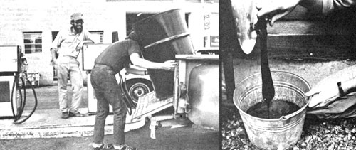
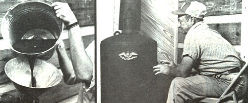

All over the country, owners of MOTHER's Waste-Oil Heater are-at this very moment-stocking up on free heating fuel!
As the weather turns cold, it's a sure bet that the "gasoline crisis" of this past summer will turn into a national shortage of winter heating fuels. Worse yet, while the gas pump problem has inconvenienced lots of folks, a lack of home-heating energy could be dangerous.
However, as MOTHER pointed out last year (in Issue No. 53, page 104) there's a way to obtain free fuel to heat your garage, workshop, or home . . . and that source of energy-used motor oil-can be burned in MOTHER's Waste-Oil Heat er, which you can build for a total investment of about $36 and no more than one day of your time!
|
 ABOVE, LEFT TO RIGHT: Many service stations across the United States still give away used crankcase oil, and some will even pay you to cart the ""worthless"" liquid off.... It's an easy matter to strain the oil: All you have to do is follow the instructions in MOTHER's plans... |
 ABOVE, LEFT TO RIGHT: Just pour the cleaned oil into the heater and fire' er up.... ""Waste oil warmth"" is so inexpensive you can heat your house, garage and workshop and still have spare ""fuel"" to share! |
|